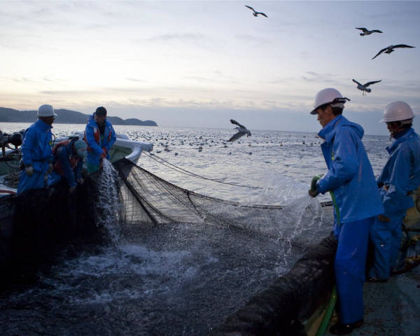
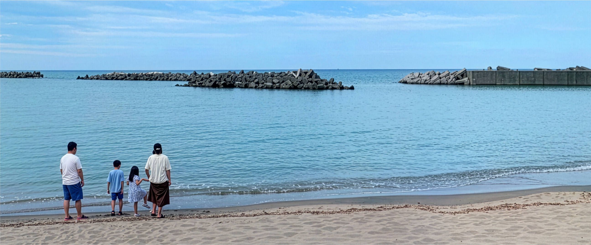
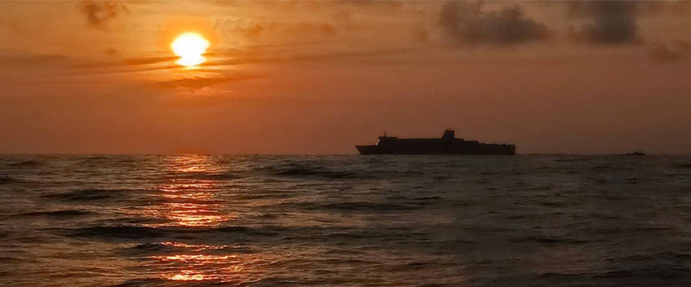
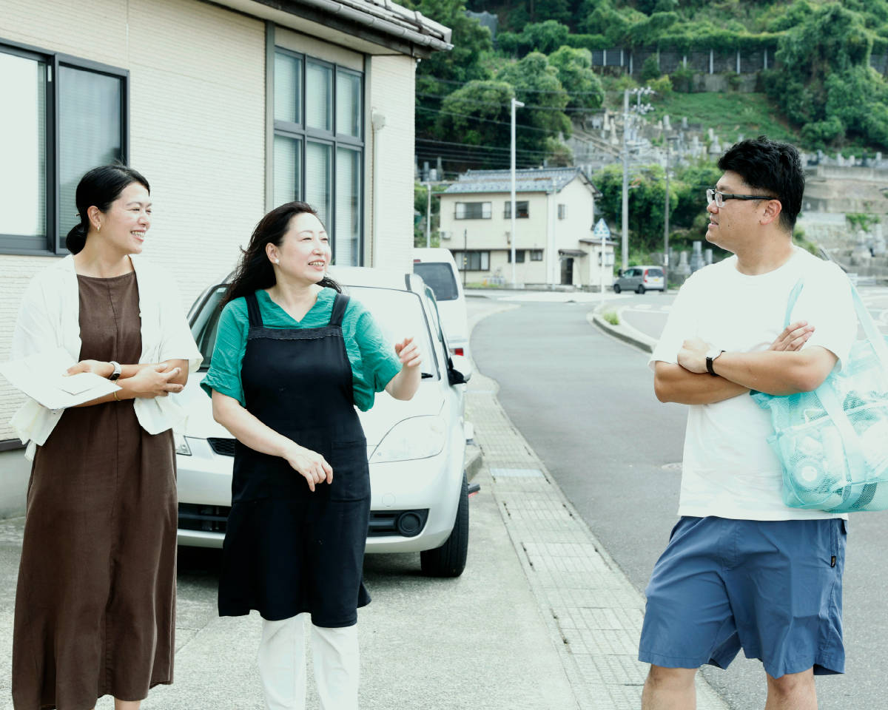
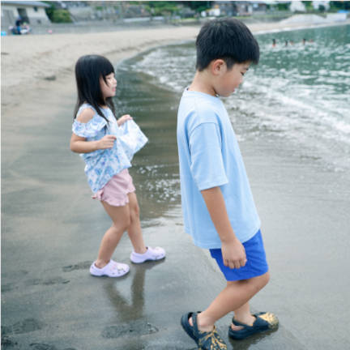
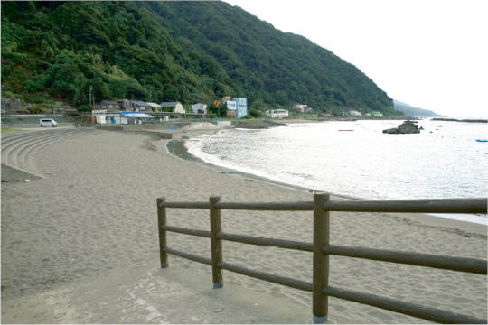
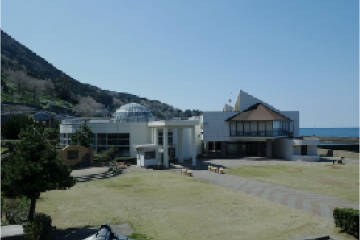
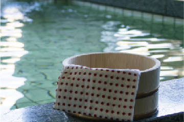
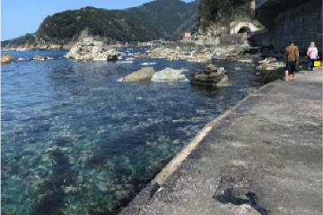

のんびり過ごす
民宿から一歩出れば、目の前は海水浴場。思う存分遊んだあとは、まるで我が家のように、よねやでお寛ぎください。非日常の空間が心も体も癒してくれます。
越廼地区について

福井市越廼地区は、越前海岸の豊かな自然に囲まれた、海と山の暮らしが息づく地域です。
海岸沿いの急な斜面には、冬の風物詩でもある「越前水仙」の畑が広がります。寒風に耐えながら育つ水仙は、香りが豊かで、冬の日本海を背景に咲く姿は越廼を象徴する風景のひとつです。
一方、海では定置網漁業が営まれ、茱崎漁港を中心に、季節ごとにさまざまな魚が水揚げされています。海の恵みを日々の暮らしに取り入れながら、漁業とともに地域の生活が受け継がれてきました。
花を育てる山の斜面と、魚を獲る日本海。そのどちらも、越廼の人々の暮らしと深く結びついています。


よねやで過ごす
ここでしかできない
自然と向き合う体験
近くには、海や山があり、ノスタルジックな風景がまだ残っています。温泉や浜があるので、海を眺めながら散歩をすれば、心地よい波音に包まれます。また日々違う、夕日の光景に心が癒されます。夜は輝く星空を見ながらお寛ぎください。


周辺スポット



